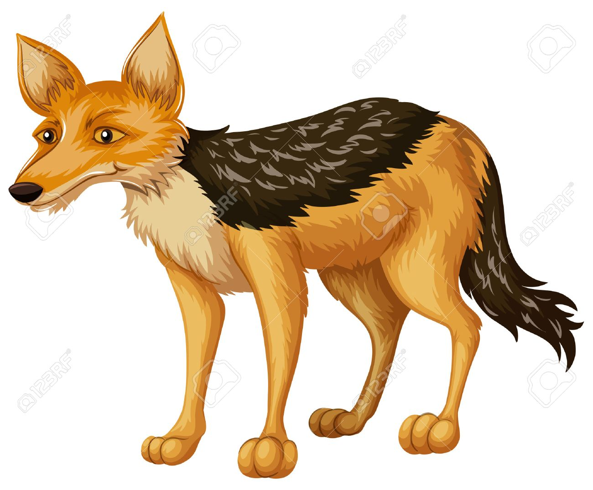

Regresar
Siguiente
¿De qué trata?
En este cuento relata como 3 animales (un jaguar, un coyote y un perro) fueron expulsados o rechazados de su manada por ser ya muy viejos ya que se les consideraba que eran muy inutiles, cuando los echaron los 3 se encontraron por coincidencia haciendo un pacto entre ellos, se defenderian entre si y cazarian lo que encuentren y se compartiria con todos. Un dia el coyote encontro un diminuto pedazo de pan y se lo iba a comer solo pero sus compañeros le dijeron que debian compartirlo entre los 3 pero al ser muy pequeño el trozo decidieron que se lo quedaria el más viejo, el perro y el jaguar estuvieron discutiendo sobre sus edades para ganarse el pan, mientras que el coyote sin dudarlo se comió el pedazo entero, el perro y el jaguar al darse cuenta de esto dicidieron echar al coyote diciendole que no sabia ser un buen amigo que por eso lo echaron de su manada original, y asi se separaron del coyote y el perro y el jaguar siguieron su camino.
Moraleja
No debemos sacarnos provecho de alguien al cual le tenemos confianza ya que nosotros mismos podemos quitarnos una amistad.
Cómo lo aplicaría a mi vida
En saber con quien me junto y ser justo con mi grupo.

Ir a Seleccion de Capitulos
Portada